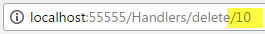

Razor Pages 中的 handler 方法是根据请求自动执行的方法。
Razor Pages 框架使用命名约定来选择要执行的适当处理程序方法。
默认约定通过将用于请求的 HTTP 动词与以“On”为前缀的方法名称进行匹配来工作：OnGet()、OnPost()、 OnPut() 等
handler 方法也有可选的异步等效项：OnPostAsync()、OnGetAsync() 等。
您不需要添加 Async 后缀。
该选项是为喜欢在包含异步代码的方法上使用 Async 后缀的开发人员提供的。
就 Razor Pages 框架而言，OnGet 和 OnGetAsync 是相同的处理程序。 您不能在同一页面中同时拥有两者。 如果这样做，框架将引发异常：
InvalidOperationException: Multiple handlers matched. The following handlers matched route data and had all constraints satisfied:
（InvalidOperationException: 匹配多个 handlers 。 以下 handlers 匹配路由数据并满足所有约束：）
Void OnGetAsync(), Void OnGet()
编译器允许用重载的方式，用参数不同来消除基于相同动词的 handlers 之间的歧义。
因此，虽然 OnGet 方法接受参数重载而 OnGetAsync 方法不接受，也会引发相同的异常。
handler 方法必须是 public 的并且可以有任何返回类型，尽管通常情况下，它们最有可能具有返回类型 void（如果异步，则为 Task）
或 action result。
以下示例说明了 PageModel 中的基本用法：
public class IndexModel : PageModel
{
public string Message { get; set; }
public void OnGet()
{
Message = "Get used";
}
public void OnPost()
{
Message = "Post used";
}
}
内容页面包括一个使用 POST 的表单方法和一个启动 GET 请求方法：
<h3>@Message</h3>
<form method="post"><button class="btn btn-default">Click to post</button></form>
<p><a href="/" class="btn btn-default">Click to Get</a></p>
当第一次导航到页面时，会显示“Get used”消息，因为 HTTP GET 动词用于请求，触发 OnGet() handler。
当“点击 Post ”按钮被按下时，表单被 Post 并且触发 OnPost() handler，结果页面会显示“ Post 已使用”消息。
单击超链接会再次显示“Get used”消息。
请注意，HTTP 是无状态的。 在 OnGet handler 中初始化的任何值在 OnPost handler 中都不可用。
如果您完全删除 OnPost handler 中的分配，则页面显示时 Message 将为空。
如果您想重用 OnPost handler 中的值，您必须再次初始化它。
最常见的例子是当您在无效提交后重新显示包含下拉列表的表单时。
您在 OnGet 中从数据库填充项目，但如果 ModelState 无效，则忘记在 OnPost 中重新填充。
命名 handler 方法
Razor Pages 包含一个称为“命名 handler 方法”的功能。 此功能使您可以指定可以为单个动词执行的多个方法。 例如，如果您的页面具有多个表单，每个表单负责不同的结果，您可能想要这样做。
以下代码显示了在 Razor 页面顶部的代码块中声明的一组命名 handler 方法（尽管如果您正在使用它们，它们也可以放置在 PageModel 类中）：
@page
@{
@functions{
public string Message { get; set; } = "Initial Request";
public void OnGet()
{
}
public void OnPost()
{
Message = "Form Posted";
}
public void OnPostDelete()
{
Message = "Delete handler fired";
}
public void OnPostEdit(int id)
{
Message = "Edit handler fired";
}
public void OnPostView(int id)
{
Message = "View handler fired";
}
}
}
方法的名称附加到“OnPost”或“OnGet”，具体取决于处理程序是否应作为 POST 或 GET 请求的结果被调用。
下一步是将特定的表单操作与命名处理程序相关联。
这是通过为表单标签助手设置 asp-page-handler 属性值来实现的：
<div class="row">
<div class="col-lg-1">
<form asp-page-handler="edit" method="post">
<button class="btn btn-default">Edit</button>
</form>
</div>
<div class="col-lg-1">
<form asp-page-handler="delete" method="post">
<button class="btn btn-default">Delete</button>
</form>
</div>
<div class="col-lg-1">
<form asp-page-handler="view" method="post">
<button class="btn btn-default">View</button>
</form>
</div>
</div>
<h3 class="clearfix">@Model.Message</h3>
上面的代码呈现为三个按钮，每个按钮都有自己的形式以及 Message 属性的默认值：
handler 的名称作为查询字符串参数添加到表单的操作中：
当您单击每个按钮时，将执行与查询字符串值关联 handler 的代码，每次更改消息。
If you prefer not to have query string values representing the handler's name in the URL, you can use routing to add an optional route value for "handler" as part of the route template in the @page directive:
@page "{handler?}"然后将 handler 的名称附加到 URL：
Handler 方法中的参数
Handler 方法可以接受参数设定：
public void OnPostView(int id)
{
Message = $"View handler fired for {id}";
}
在 POST handler 中，参数名称必须与要自动绑定到参数的传入值的表单字段名称匹配：
<div class="col-lg-1">
<form asp-page-handler="view" method="post">
<button class="btn btn-default">View</button>
<input type="hidden" name="id" value="3" />
</form>
</div>
或者，您可以使用表单标签助手 asp-route 属性将参数值作为 URL 的一部分传递，作为查询字符串值或作为 GET 请求的路由数据：
<form asp-page-handler="delete" asp-route-id="10" method="post">
<button class="btn btn-default">Delete</button>
</form>
您将参数的名称附加到 asp-route 属性（在本例中为“id”），然后提供一个值。 这将参数作为查询字符串值传递：
或者您可以扩展页面的路由模板以考虑可选参数：
@page "{handler?}/{id?}"这会导致参数值作为单独的段添加到 URL 中：

处理同一个表单的多个动作
需要设计一些表单来满足不止一种可能的操作。在这种情况下，您可以编写一些条件代码来确定应采取的操作， 或者您可以编写单独的命名处理程序方法，然后使用表单操作标记助手指定在提交表单时执行的 handler 方法：
<form method="post">
<button asp-page-handler="Register">Register Now</button>
<button asp-page-handler="RequestInfo">Request Info</button>
</form>
传递给 page-handler 属性的值是不带 OnPost 前缀或 Async 后缀的 handler 方法的名称：
public async Task<IActionResult> OnPostRegisterAsync()
{
//…
return RedirectToPage();
}
public async Task<IActionResult> OnPostRequestInfo()
{
//…
return RedirectToPage();
}
NonHandler 属性
在某些情况下，您可能不希望将页面上的公共方法视为 handler 方法，尽管其名称与 handler 方法发现的约定相匹配。
您可以使用 NonHandler 属性来指定修饰方法，使其不是页面 handler 方法：
(译者：或者可以更换访问修饰符 private/protected)
[NonHandler]
public void OnGetFoo()
{
...
}